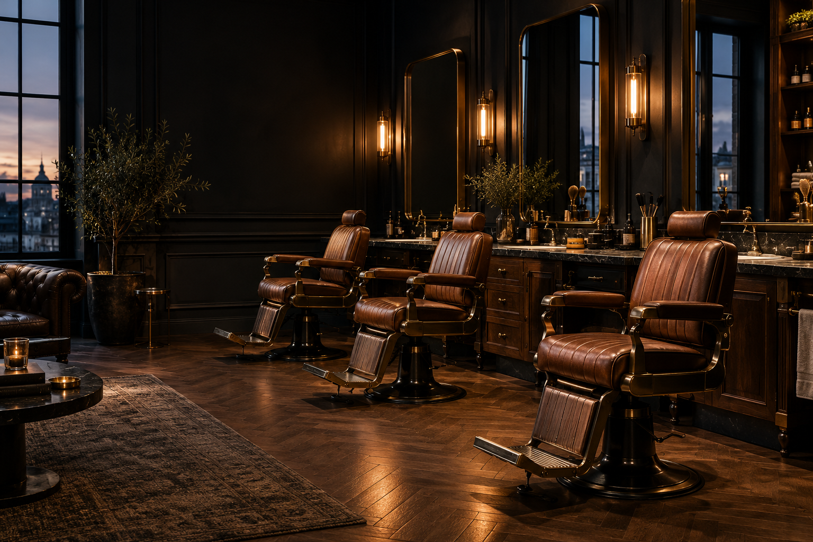

01 / ФИЛОСОФИЯ ФЕШН
Хорошо выглядеть.
Быть собой.
Мы верим, что стиль — это продолжение характера. Поэтому сначала слушаем, а потом берёмся за ножницы. Найдём форму, которая подходит именно тебе, и покажем, как сохранить её дома.
Твой стиль
Форма под тебя,
а не под тренд.
Точное мастерство
Внимание к каждой
линии и переходу.
Время для себя
Хороший кофе.
Спокойный ритм.

вернуться.
02 / УСЛУГИ И ЦЕНЫ
Всё, что нужно
твоему стилю.
От свежего фейда до классики.
Выбери своё — остальное за нами.
Предварительный прайс — окончательные цены уточняются при подтверждении записи.
03 / ВНУТРИ ФЕШН
Больше, чем стрижка.
Своя атмосфера.
Мода меняется.
Хороший стиль остаётся.
КАЖДЫЙ ДЕНЬ
04 / ПЕРЕД ВИЗИТОМ
Всё просто.
Даже первый раз.
Не знаю, какую стрижку выбрать +
Расскажи, как обычно укладываешь волосы и что хочешь изменить. Барбер предложит форму с учётом твоих волос, привычек и пожеланий. Можно принести фото для вдохновения.
Что входит в мужскую стрижку? +
Консультация, мытьё головы, стрижка и укладка. В конце барбер подскажет, как ухаживать за волосами дома.
Как записаться и подтвердить время? +
Нажми «Записаться» и выбери услугу и удобное время. Сейчас сайт сохраняет только черновик на твоём устройстве. Онлайн-подтверждение появится после подключения сервиса записи.
ХОРОШИЙ ДЕНЬ НАЧИНАЕТСЯ С ХОРОШЕЙ СТРИЖКИ
Пора освежить
свой образ.
Выбери услугу. Найди время для себя.
Увидимся
в кресле.
появятся здесь перед открытием.